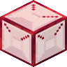
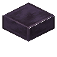
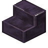
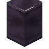
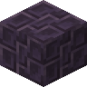

耀红下界 Rubinated Nether
共 132 个条目 · rubinated_nether
版本: 2.0.1b · 来源: rubinated_nether-2.0.1b.jar
Rubinated Nether is a Vanilla+ expansion mod which adds the Nether Ruby into the game for utility, decoration, redstone, and magic.
MC百科中文名: 耀红下界
MC百科页面: https://www.mcmod.cn/class/17505.html（耀红下界 (RubinatedNether)）
官方介绍 （Modrinth · 联网获取）
Rubinated Nether is a Vanilla+ mod adding Minecraft's scrapped Ruby. This mod adds several utility and decoration blocks, with a revamped Nether Progression.
Current Features
Within the Nether you may find Rubies near the Lava Ocean, near the Nether Roof or in Piglin Bastions. Harvest them with a Diamond Pickaxe.
Using the Freezer, you can freeze Molten Rubies into Rubies, Ice into its colder variants, Magma Cream into Slimeballs and Magma Blocks into Obsidian. Freezing Snow yields the (un)obtainable Frosted Ice.
Craft the Ruby Laser to detect entities and blocks in its path. Its beam is invisible unless you wear Ruby Lenses on your head. Alternatively, place Glass directly in front of the Ruby Laser to make its beam visible. Stained Glass tints the laser beam. Its block output is proportional to how close the block or entity is. The laser beam detects block hitboxes. Right-clicking the laser will turn it Tinted, making it only detect blocks and not entities. Placing Tinted Glass in the path of the laser will shorten it's range without redstone output. Currently only works with Tinted mode.
Break Rubies into Ruby Shards for a more economical and efficient way to Barter with Piglins.
Use Soakstones to soak up lava like a sponge, or craft a Ruby Brazier to have Fire Resistance applied to you.
Craft Ruby Glass for a blast-proof window, or Bleeding Obsidian to invite nightmares. You can Rubinate obsidian by right clicking any Crying Obsidian with a Ruby Shard.
Ruby Chandeliers, Ruby Lanterns and Ruby Lava Lamps are all stylish decorations to light up your surroundings! Blocks of Molten Ruby and Molten Ruby Glass also glow! Ruby Chandeliers can be dropped onto enemies and players like Dripstone Spikes.
Vanilla armor also supports Ruby Armor Trims for an orange-hue trim.
Rubinated Nether is compatible with Spelunkery (Rough Ruby variants), Jaden's Nether Expansion, The Aether, and other libraries. The mod also offers a variety of config features to customize the mod.
To disable the Rubinated Netherite Recipe, type the following command:
/datapack disable "rubinated_nether/better_netherite_template"
Upcoming Features
- Overhauled, Unique Piglin Bartering
- Rubination Divination (Better Enchantments with a costly downside!)
- Sacred Shrine (Nether Trial Chambers)
- The Bronze, Sentinel, and other mobs
- Bronze
- The Wrought bullet-hell boss fight
- Nether/Dimensional Reactors
- Mod Compatibility
- ???
Other Information
Can I use this mod within my modpack?
Yes you can! We'd be more than happy for you to do so!
What versions and launchers is Rubinated Nether compatible with?
1.21.1 for Neoforge is the maintained version where updates are released. 1.20.1 for Forge and Fabric is an older version which is no longer updated.
Dependencies?
Rubinated Nether is furthermore compatible with JEI, EMI, Curios, Trinkets, and Jaden's Nether Expansion
Developers?
- Artienia - Lead Developer
- Juniii - Modeller and Co-developer
- Darksonic - Co-developer
- Bon - Artist
Join our Discord Server to receive support and give feedback!
Ruby Armor and Tools Please?
No, this is never going to be added. This is not that type of mod.
资料来源：Rubinated Nether（自动匹配，仅供参考）
物品与方块
rubinated_nether:acedia_rune · 物品贪食符文
rubinated_nether:ardenter_rune · 物品
 流血的黑曜石
流血的黑曜石rubinated_nether:bleeding_obsidian · 方块
 青铜块
青铜块rubinated_nether:bronze_block · 方块
 青铜灯
青铜灯rubinated_nether:bronze_bulb · 方块
 青铜手钻
青铜手钻rubinated_nether:bronze_drill · 物品
 青铜粉
青铜粉rubinated_nether:bronze_powder · 物品
 青铜棒
青铜棒rubinated_nether:bronze_rod · 物品
 青铜掷弹
青铜掷弹rubinated_nether:bronze_shot · 物品
 雕纹神殿石砖
雕纹神殿石砖rubinated_nether:chiseled_shrine_stone_bricks · 方块
 腐蚀的青铜块
腐蚀的青铜块rubinated_nether:corroded_bronze_block · 方块
 腐蚀的青铜灯
腐蚀的青铜灯rubinated_nether:corroded_bronze_bulb · 方块
 腐蚀的切制青铜砖
腐蚀的切制青铜砖rubinated_nether:corroded_cut_bronze_bricks · 方块
 腐蚀的切制青铜砖台阶
腐蚀的切制青铜砖台阶rubinated_nether:corroded_cut_bronze_bricks_slab · 方块
 腐蚀的切制青铜砖楼梯
腐蚀的切制青铜砖楼梯rubinated_nether:corroded_cut_bronze_bricks_stairs · 方块
 腐蚀的切制青铜柱
腐蚀的切制青铜柱rubinated_nether:corroded_cut_bronze_pillar · 方块
 晶化青铜块
晶化青铜块rubinated_nether:crystallized_bronze_block · 方块
 晶化青铜灯
晶化青铜灯rubinated_nether:crystallized_bronze_bulb · 方块
 晶化切制青铜砖
晶化切制青铜砖rubinated_nether:crystallized_cut_bronze_bricks · 方块
 晶化切制青铜砖台阶
晶化切制青铜砖台阶rubinated_nether:crystallized_cut_bronze_bricks_slab · 方块
 晶化切制青铜砖楼梯
晶化切制青铜砖楼梯rubinated_nether:crystallized_cut_bronze_bricks_stairs · 方块
 晶化切制青铜柱
晶化切制青铜柱rubinated_nether:crystallized_cut_bronze_pillar · 方块
 切制青铜砖
切制青铜砖rubinated_nether:cut_bronze_bricks · 方块
 切制青铜砖台阶
切制青铜砖台阶rubinated_nether:cut_bronze_bricks_slab · 方块
 切制青铜砖楼梯
切制青铜砖楼梯rubinated_nether:cut_bronze_bricks_stairs · 方块
 切制青铜柱
切制青铜柱rubinated_nether:cut_bronze_pillar · 方块
 脱色的青铜块
脱色的青铜块rubinated_nether:discolored_bronze_block · 方块
 脱色的青铜灯
脱色的青铜灯rubinated_nether:discolored_bronze_bulb · 方块
 脱色的切制青铜砖
脱色的切制青铜砖rubinated_nether:discolored_cut_bronze_bricks · 方块
 脱色的切制青铜砖台阶
脱色的切制青铜砖台阶rubinated_nether:discolored_cut_bronze_bricks_slab · 方块
 脱色的切制青铜砖楼梯
脱色的切制青铜砖楼梯rubinated_nether:discolored_cut_bronze_bricks_stairs · 方块
 脱色的切制青铜柱
脱色的切制青铜柱rubinated_nether:discolored_cut_bronze_pillar · 方块
 干冰
干冰rubinated_nether:dry_ice · 方块嫉妒符文
rubinated_nether:envy_rune · 物品
 冷冻器
冷冻器rubinated_nether:freezer · 方块
 rubinated_nether:frosted_ice
rubinated_nether:frosted_icerubinated_nether:frosted_ice · 物品暴食符文
rubinated_nether:gluttony_rune · 物品
 高阶仪式祭品
高阶仪式祭品rubinated_nether:grand_ritual_offering · 物品贪婪符文
rubinated_nether:greed_rune · 物品背叛符文
rubinated_nether:insidiae_rune · 物品
 炽融红宝石熔岩灯
炽融红宝石熔岩灯rubinated_nether:lava_lamp · 方块色欲符文
rubinated_nether:luxuria_rune · 物品
 炽融红宝石
炽融红宝石rubinated_nether:molten_ruby · 物品
 炽融红宝石块
炽融红宝石块rubinated_nether:molten_ruby_block · 方块
 炽融红宝石玻璃
炽融红宝石玻璃rubinated_nether:molten_ruby_glass · 方块炽融红宝石玻璃板
rubinated_nether:molten_ruby_glass_pane · 方块炽融红宝石粒
rubinated_nether:molten_ruby_nugget · 物品
 炽融红宝石矿石
炽融红宝石矿石rubinated_nether:molten_ruby_ore · 方块
rubinated_nether:music_disc_shimmer · 物品
 下界红宝石矿石
下界红宝石矿石rubinated_nether:nether_ruby_ore · 方块过食符文
rubinated_nether:nimis_rune · 物品

华丽红宝石玻璃rubinated_nether:ornate_ruby_glass · 方块
 华丽红宝石玻璃板
华丽红宝石玻璃板rubinated_nether:ornate_ruby_glass_pane · 方块
 磨制神殿石
磨制神殿石rubinated_nether:polished_shrine_stone · 方块

磨制神殿石台阶rubinated_nether:polished_shrine_stone_slab · 方块

磨制神殿石楼梯rubinated_nether:polished_shrine_stone_stairs · 方块

磨制神殿石墙rubinated_nether:polished_shrine_stone_wall · 方块
 rubinated_nether:powder_snow
rubinated_nether:powder_snowrubinated_nether:powder_snow · 物品傲慢符文
rubinated_nether:pride_rune · 物品仪式祭品
rubinated_nether:ritual_offering · 物品?rubinated_nether:rough_ruby
rubinated_nether:rough_ruby · 物品
 rubinated_nether:rough_ruby_block
rubinated_nether:rough_ruby_blockrubinated_nether:rough_ruby_block · 方块?rubinated_nether:rough_ruby_shard
rubinated_nether:rough_ruby_shard · 物品
 镶红宝石黑石
镶红宝石黑石rubinated_nether:rubinated_blackstone · 方块
 镶红宝石雕纹神殿石砖
镶红宝石雕纹神殿石砖rubinated_nether:rubinated_chiseled_shrine_stone_bricks · 方块
 镶红宝石神殿石砖
镶红宝石神殿石砖rubinated_nether:rubinated_shrine_stone_bricks · 方块
 耀红祭坛
耀红祭坛rubinated_nether:rubination_altar · 方块
 红宝石
红宝石rubinated_nether:ruby · 物品
 红宝石块
红宝石块rubinated_nether:ruby_block · 方块
 红宝石火盆
红宝石火盆rubinated_nether:ruby_brazier · 方块
 红宝石吊灯
红宝石吊灯rubinated_nether:ruby_chandelier · 方块
 红宝石玻璃
红宝石玻璃rubinated_nether:ruby_glass · 方块
 红宝石玻璃板
红宝石玻璃板rubinated_nether:ruby_glass_pane · 方块
 红宝石灯笼
红宝石灯笼rubinated_nether:ruby_lantern · 方块
 红宝石激光器
红宝石激光器rubinated_nether:ruby_laser · 方块
 红宝石眼镜
红宝石眼镜rubinated_nether:ruby_lens · 物品
 红宝石碎片
红宝石碎片rubinated_nether:ruby_shard · 物品
 符文石
符文石rubinated_nether:runestone · 方块?rubinated_nether:shimmer_disc
rubinated_nether:shimmer_disc · 物品
 神殿石
神殿石rubinated_nether:shrine_stone · 方块
 神殿石砖
神殿石砖rubinated_nether:shrine_stone_bricks · 方块
 神殿石砖台阶
神殿石砖台阶rubinated_nether:shrine_stone_bricks_slab · 方块
 神殿石砖楼梯
神殿石砖楼梯rubinated_nether:shrine_stone_bricks_stairs · 方块
 神殿石砖墙
神殿石砖墙rubinated_nether:shrine_stone_bricks_wall · 方块
 神殿石柱
神殿石柱rubinated_nether:shrine_stone_pillar · 方块

神殿石瓦rubinated_nether:shrine_stone_tiles · 方块
 神殿石瓦台阶
神殿石瓦台阶rubinated_nether:shrine_stone_tiles_slab · 方块
 神殿石瓦楼梯
神殿石瓦楼梯rubinated_nether:shrine_stone_tiles_stairs · 方块
 神殿石瓦墙
神殿石瓦墙rubinated_nether:shrine_stone_tiles_wall · 方块懒惰符文
rubinated_nether:sloth_rune · 物品
 浸熔石
浸熔石rubinated_nether:soakstone · 方块做作符文
rubinated_nether:studiose_rune · 物品倨傲符文
rubinated_nether:superbia_rune · 物品
 褪色的青铜块
褪色的青铜块rubinated_nether:tarnished_bronze_block · 方块
 褪色的青铜灯
褪色的青铜灯rubinated_nether:tarnished_bronze_bulb · 方块
 褪色的切制青铜砖
褪色的切制青铜砖rubinated_nether:tarnished_cut_bronze_bricks · 方块
 褪色的切制青铜砖台阶
褪色的切制青铜砖台阶rubinated_nether:tarnished_cut_bronze_bricks_slab · 方块
 褪色的切制青铜砖楼梯
褪色的切制青铜砖楼梯rubinated_nether:tarnished_cut_bronze_bricks_stairs · 方块
 褪色的切制青铜柱
褪色的切制青铜柱rubinated_nether:tarnished_cut_bronze_pillar · 方块忧郁符文
rubinated_nether:tristia_rune · 物品虚荣符文
rubinated_nether:vainglory_rune · 物品
 涂蜡的青铜块
涂蜡的青铜块rubinated_nether:waxed_bronze_block · 物品
 涂蜡的青铜灯
涂蜡的青铜灯rubinated_nether:waxed_bronze_bulb · 物品
 涂蜡的腐蚀青铜块
涂蜡的腐蚀青铜块rubinated_nether:waxed_corroded_bronze_block · 物品
 涂蜡的腐蚀青铜灯
涂蜡的腐蚀青铜灯rubinated_nether:waxed_corroded_bronze_bulb · 物品
 涂蜡的腐蚀切制青铜砖
涂蜡的腐蚀切制青铜砖rubinated_nether:waxed_corroded_cut_bronze_bricks · 物品
涂蜡的腐蚀切制青铜砖台阶rubinated_nether:waxed_corroded_cut_bronze_bricks_slab · 物品
涂蜡的腐蚀切制青铜砖楼梯rubinated_nether:waxed_corroded_cut_bronze_bricks_stairs · 物品
 涂蜡的腐蚀切制青铜柱
涂蜡的腐蚀切制青铜柱rubinated_nether:waxed_corroded_cut_bronze_pillar · 物品
 涂蜡的晶化青铜块
涂蜡的晶化青铜块rubinated_nether:waxed_crystallized_bronze_block · 物品
 涂蜡的晶化青铜灯
涂蜡的晶化青铜灯rubinated_nether:waxed_crystallized_bronze_bulb · 物品
 涂蜡的晶化切制青铜砖
涂蜡的晶化切制青铜砖rubinated_nether:waxed_crystallized_cut_bronze_bricks · 物品
涂蜡的晶化切制青铜砖台阶rubinated_nether:waxed_crystallized_cut_bronze_bricks_slab · 物品
涂蜡的晶化切制青铜砖楼梯rubinated_nether:waxed_crystallized_cut_bronze_bricks_stairs · 物品
 涂蜡的晶化切制青铜柱
涂蜡的晶化切制青铜柱rubinated_nether:waxed_crystallized_cut_bronze_pillar · 物品
 涂蜡的切制青铜砖
涂蜡的切制青铜砖rubinated_nether:waxed_cut_bronze_bricks · 物品
涂蜡的切制青铜砖台阶rubinated_nether:waxed_cut_bronze_bricks_slab · 物品
涂蜡的切制青铜砖楼梯rubinated_nether:waxed_cut_bronze_bricks_stairs · 物品
 涂蜡的切制青铜柱
涂蜡的切制青铜柱rubinated_nether:waxed_cut_bronze_pillar · 物品
 涂蜡的脱色青铜块
涂蜡的脱色青铜块rubinated_nether:waxed_discolored_bronze_block · 物品
 涂蜡的脱色青铜灯
涂蜡的脱色青铜灯rubinated_nether:waxed_discolored_bronze_bulb · 物品
 涂蜡的脱色切制青铜砖
涂蜡的脱色切制青铜砖rubinated_nether:waxed_discolored_cut_bronze_bricks · 物品
涂蜡的脱色切制青铜砖台阶rubinated_nether:waxed_discolored_cut_bronze_bricks_slab · 物品
涂蜡的脱色切制青铜砖楼梯rubinated_nether:waxed_discolored_cut_bronze_bricks_stairs · 物品
 涂蜡的脱色切制青铜柱
涂蜡的脱色切制青铜柱rubinated_nether:waxed_discolored_cut_bronze_pillar · 物品
 涂蜡的褪色青铜块
涂蜡的褪色青铜块rubinated_nether:waxed_tarnished_bronze_block · 物品
 涂蜡的褪色青铜灯
涂蜡的褪色青铜灯rubinated_nether:waxed_tarnished_bronze_bulb · 物品
 涂蜡的褪色切制青铜砖
涂蜡的褪色切制青铜砖rubinated_nether:waxed_tarnished_cut_bronze_bricks · 物品
涂蜡的褪色切制青铜砖台阶rubinated_nether:waxed_tarnished_cut_bronze_bricks_slab · 物品
涂蜡的褪色切制青铜砖楼梯rubinated_nether:waxed_tarnished_cut_bronze_bricks_stairs · 物品
 涂蜡的褪色切制青铜柱
涂蜡的褪色切制青铜柱rubinated_nether:waxed_tarnished_cut_bronze_pillar · 物品暴怒符文
rubinated_nether:wrath_rune · 物品